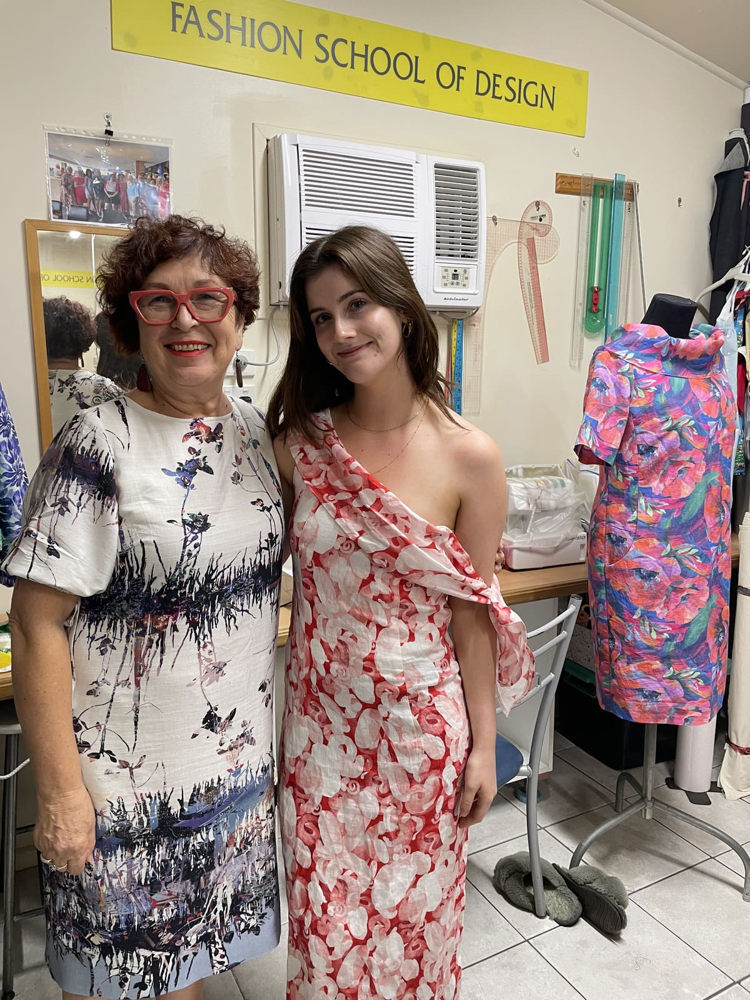
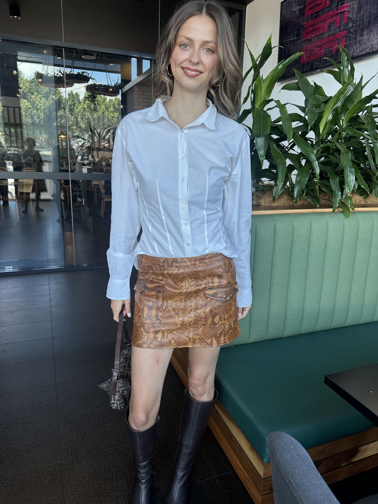
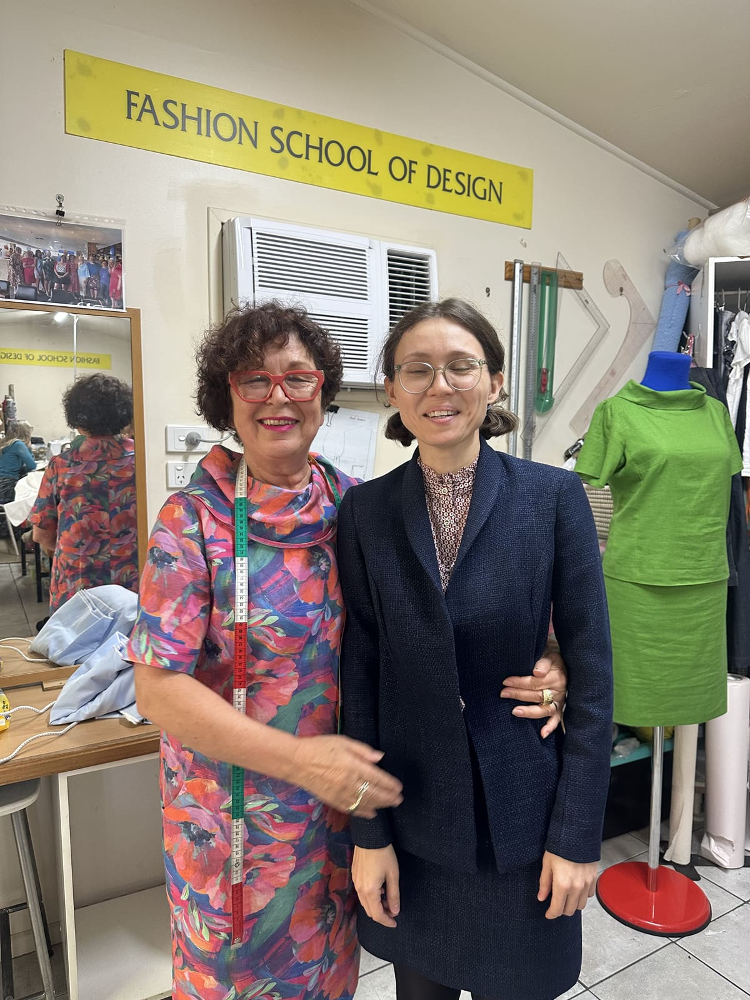
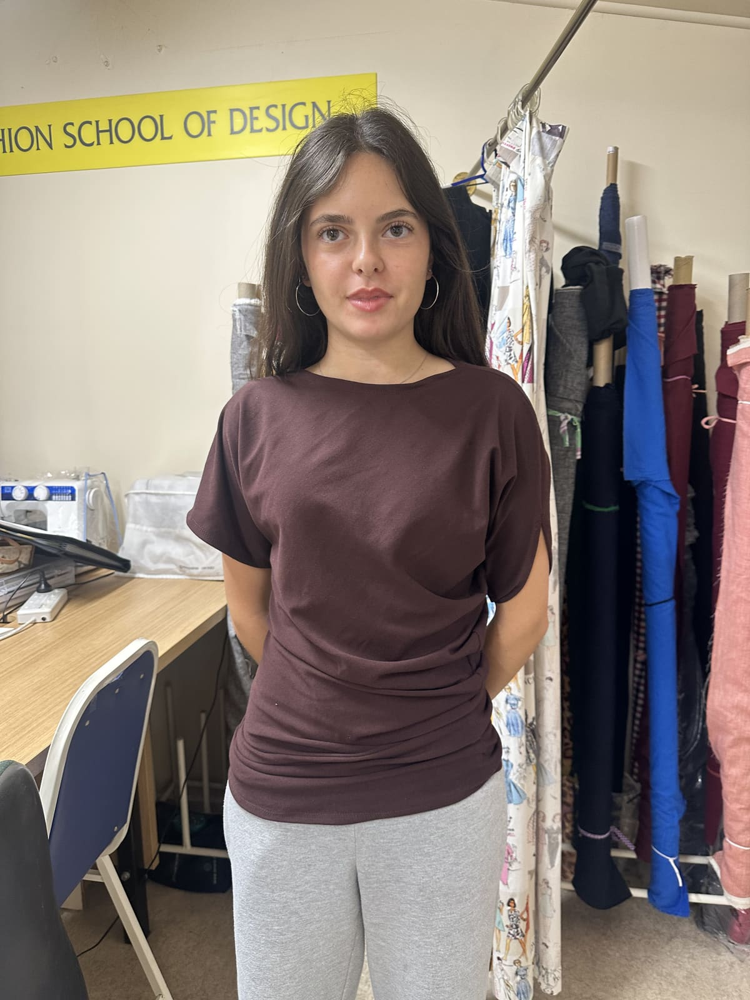
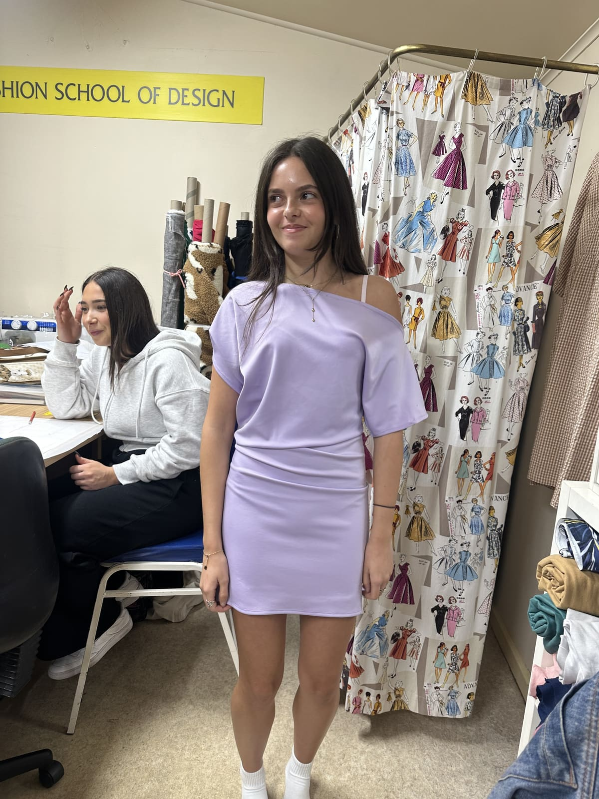

Fitted to you
Every pattern is drawn from your own measurements. Nothing off a shelf, ever.
Six people, one teacher
Individual attention, every session, at your own pace.
Everything is here
Industrial and domestic machines, overlockers, and fabric you can buy on the spot.
What is SITAM?
SITAM was born in Padova, in the north of Italy, in 1946. The Padovani family had been tailors for generations, and they wanted a way for anyone, not just a trained cutter, to make clothes that truly fit. So they designed a beautifully simple tool: a curved ruler where each curve is a part of you. The shoulder, the armhole, the sleeve. You take a handful of your own measurements, follow the curves, and a pattern appears on the paper that was drawn for your body and nobody else’s.
Eighty years on, it’s still taught the same way, from the same numbered books, and it still feels a little like magic the first time it works. Anna learned it at sixteen. She has been teaching it for forty years, and she has never found anything that fits better.
During your lessons at Fashion School of Design, you’ll learn:
- 1How to take your own measurements, properly, and your first block drawn with the SITAM rule.
- 2The skirt: drafted from your block, cut, and fitted on you.
- 3The bodice: darts, balance, and the shape you actually are.
- 4The sleeve, and then a design of your own on top of it.
- 5Cutting, sewing and finishing it, so you walk out with something you can wear.
This is the shape of the first SITAM book. Anna will tell you where your own class goes next.
Inside the studio.
Meet Anna.
Anna has been making clothes since she was four years old, and she has never really stopped. She taught herself first, then worked in couture, and at sixteen she found the SITAM method. From that day on she has never used a bought pattern again.
Over the years she has made wedding dresses, suits, children’s clothes, detailed costumes and high fashion, and for the last forty she has been teaching other people to do the same, one small class at a time. Some of her former students now run their own labels; some work at Paolo Sebastian. Most just make clothes they love wearing. She’d be happy to help you do any of them.
Made here.
Work by Anna’s students.





A student’s own words go here, once she has given them.
The facts.
- The course
- Five sessions of three hours. Once or twice a week, whichever suits you.
- Class size
- Groups of six.
- Cost
- $220 for the course. Private lessons are two hours for $150.
- Machines
- Industrial and domestic machines and overlockers are in the studio. Bring your own if you prefer.
- Fabric
- There is fabric here to buy, or Anna will tell you where to get what you want.
- At the end
- Finish book one and SITAM in Italy issues a certificate and posts it to you. Anna is accredited by SITAM to assess it. It is a certificate from SITAM in Italy, not an Australian qualification, and not pretending to be.
Free first hour.
Tell Anna a little about yourself and what you’d love to make. She reads every message herself, gives you a call, and finds a time that suits you for your free hour in the studio.
Sent. Anna will call you.
If you would rather not wait, ring her on 0433 353 612.